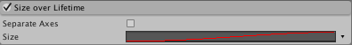

Size over Lifetime module
Many effects involve a particle changing size according to a curve, which can be set in this module.

Properties
| Property | Function |
|---|---|
| Separate Axes | Control the particle size independently on each axis. |
| Size | A curve which defines how the particle's size changes over its lifetime. |
Details
Some particles will typically change in size as they move away from the point of emission, such as those that represent gases, flames or smoke. For example, smoke will tend to disperse and occupy a larger volume over time. You can achieve this by setting the curve for the smoke particle to an upward ramp, increasing with the particle's age. You can also further enhance this effect using the Color Over Lifetime module to fade the smoke as it spreads.
For fireballs created by burning fuel, the flame particles will tend to expand after emission but then fade and shrink as the fuel is used up and the flame dissipates. In this case, the curve would have a rising "hump" that rises and then falls back down to a smaller size.
Non-uniform particle scaling

You can specify how a particle’s width, height and depth changes over lifetime independently. In the Size over Lifetime module, check the Separate Axes checkbox, then change the X (width), Y (height) and Z (depth). Remember that Z will only be used for Mesh particles.